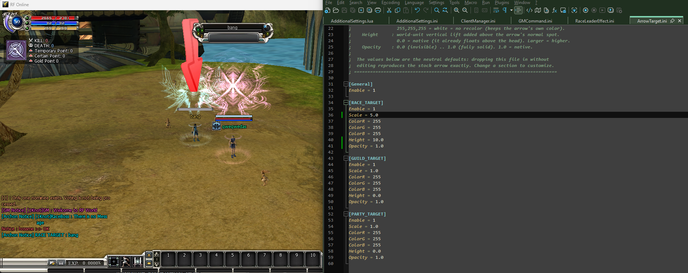

Group-Target Arrow
Group-Target Arrow

What it does — and why you would use it
When a race leader, guild master or party leader wants to point everyone at the same mob or player, they Ctrl+click a target. A glowing arrow then floats over that target’s head for every member of the group to see. This module lets you control what that arrow looks like — its size, colour, how high it sits, how solid it is, and whether each kind of group arrow is shown at all.
It is a server setting: the Zone server reads ArrowTarget.ini and pushes the look to every client as players enter the world and again whenever you save a change — so a player cannot spoof their own arrow. There is no client file.
| Part | Where it lives | Its job |
|---|---|---|
| Server look | .Server\Zoneserver\RF_Bin\Modules\RaceLeaderEffect\ArrowTarget.ini | The master on/off plus a section for each group type (race / guild / party) setting size, colour, height and opacity. |
| Client half | No client file. The server pushes the resolved look and the client draws the arrow with it. Both the Zone server and the game client must be the current build. | |
Enable = 1 but every value at its neutral default (white, scale 1.0, height 0, opacity 1.0), so dropping it in reproduces the stock arrow exactly. Change a value only when you want a different look. To hide all arrows, set [General] Enable = 0.How to activate / customise it
- Open the file. .Server\Zoneserver\RF_Bin\Modules\RaceLeaderEffect\ArrowTarget.ini sits beside RaceLeaderEffect.ini in the same folder. Open it in Notepad.
- Set the master switch.
[General] Enable = 1shows the arrows;0hides every group-target arrow. - Tune one, some, or all group types. Edit
[RACE_TARGET],[GUILD_TARGET]and[PARTY_TARGET]independently — each has the same keys (see the config table and tuning the look). - Save — nothing to restart. A running server hot-reloads the file and re-pushes the new look to everyone online within a second.
- Test it. As a leader, Ctrl+click a target and watch the arrow change. Note: only an actual race leader, guild master or party leader can place the mark — the server rejects the request from anyone else.
[General] Enable = 0 instead of removing the file.The config file
One file, four sections. [General] holds the master switch; the three group-type sections share the same keys.
| Key | Section(s) | Meaning |
|---|---|---|
Enable | [General] | Master switch for all group-target arrows. 1 = show (subject to each type below), 0 = hide entirely. |
Enable | [RACE_TARGET] / [GUILD_TARGET] / [PARTY_TARGET] | Show or hide just that one group type’s arrow. |
Scale | each type | Size multiplier on the arrow. 1.0 = native, 2.0 = twice as big. |
ColorR / G / B | each type | Tint, 0–255 per channel. 255,255,255 (white) = no recolour, keeps the arrow’s own baked colour. |
Height | each type | Extra world-unit lift above the arrow’s normal spot. 0.0 = native (it already floats above the head); larger = higher. |
Opacity | each type | 0.0 (invisible) to 1.0 (fully solid). 1.0 = native. |
Tuning the look — examples
A few ready-to-paste ideas. Change only the section you want; leave the others at their neutral defaults.
; A big bright-red race-leader arrow that sits higher
[RACE_TARGET]
Enable = 1
Scale = 2.0
ColorR = 255
ColorG = 40
ColorB = 40
Height = 30.0
Opacity = 1.0
; A faint party arrow, same size, no recolour (just see-through)
[PARTY_TARGET]
Enable = 1
Scale = 1.0
ColorR = 255
ColorG = 255
ColorB = 255
Height = 0.0
Opacity = 0.4- Colour is a tint, not a paint. It multiplies the arrow texture, so
255,255,255leaves it untouched; push a channel up / down to shade it. - Opacity fades it, Enable removes it. Use
Opacityfor a subtle arrow and per-typeEnable = 0to switch one group’s arrow off while keeping the others. - Height lifts the whole arrow up — handy if a tall hat or aura was hiding the arrow at its native spot.
Left at its shipped defaults the arrow is identical to stock; with [General] Enable = 0 no group-target arrow is drawn at all.